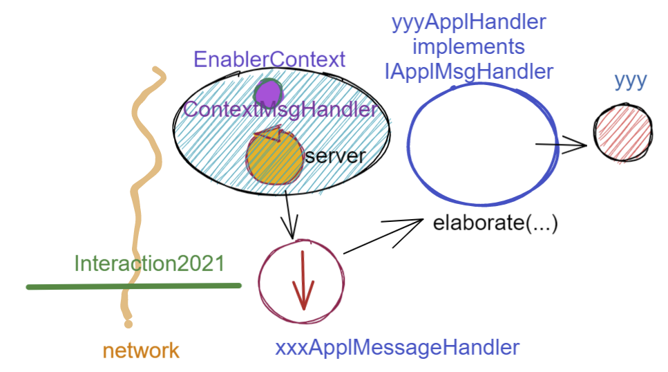
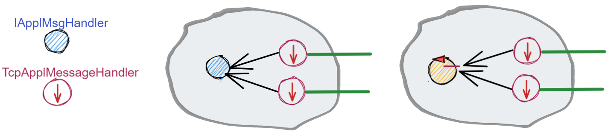
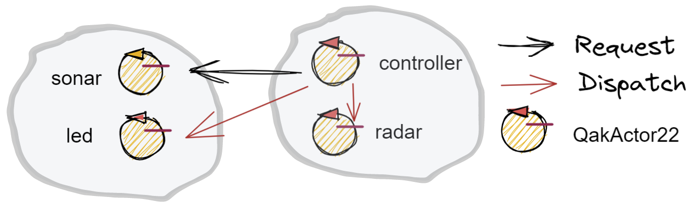
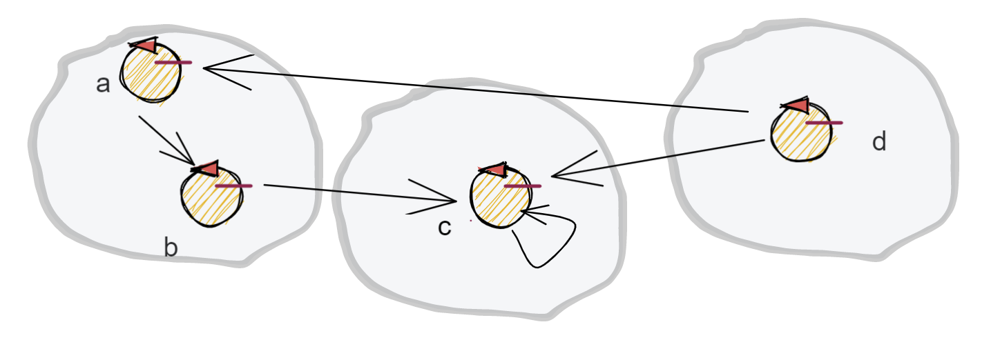

Attori¶
Al termine de Lo SPRINT4 abbiamo costruito un sistema la cui architettura è basata sul seguente schema-base:
{kind=link}
Come conseguenza, risulta possibile che lo stesso componente applicativo di tipo IApplMsgHandler possa essere utilizzato da due o più clienti remoti.
I casi di studio introdotto in Sprint4: esperimenti pone in evidenza comportamenti erronei che potrebbero derivare da questa condivisione e la difficoltà di concepire test unit in grado di fare emergere le situazioni che li generano.
Non merviglia che, per evitare alla radice il problema, molti propongano di vincolare i componenti applicativi ad un modello di Programmazione funzionale, privandoli di uno stato interno modificabile.
Abbiamo anche detto che la trasformazione di un componente applicativo da POJO ad Attore potrebbe evitare questo vincolo, sostituendo alla interazione basata su procedure-call una interazione basata sullo scambio di messaggi.
{kind=link}
In questo modo, il ‘macro-mondo’ rappresentato dalla applicazioni distribuite di rete troverebbe una sua reificazione anche a livello del ‘micro-mondo’ rappresentato dalla interazioni di componenti interni al sistema. Questa uniformità concettuale introduce di fatto un nuovo Paradigma di programmazione.
Il paradigma ad Attori¶
Secondo Carl Hewitt (uno dei padri fondatori) il modello dell’attore è stato ispirato, a differenza dei precedenti modelli di calcolo, dalla fisica , inclusa la relatività generale e la meccanica quantistica.
Vi è oggi una ampia gamma di proposte di linguaggi / libreire ad attori Molte oggi sono le libreire , tra cui:
Akka : ispirato a Modello computazionale ad attori di Hewitt. Per le motivazioni si veda Akka actors.
GO : ispirato a CSP propone goroutine e CanaliGO. Per la documentazione si veda GO doc.
Kotlin actors : propone croutines e channels (si veda Kotlin channel)
Un motto di riferimento per questo modello è il seguente:
Do not communicate by sharing memory; instead, share memory by communicating.
Prima di addentraci nei dettagli tecnici, può essere conveniente operare ancora come semplici utenti di un qualche supporto/infrastruttura disponibile, in modo da acquisire confidenza con il nuovo modo di organizzare il software implicato dal modello ad attori.
L’infrastruttura che useremo qui è stata sviluppata in Kotlin, per la sua compatibità con Java.
Actor20 e Actor22¶
Per evitare confusioni, indicheremo
Actor20 o ActorQak: gli attori implementati in Kotlin dalla libreria
it.unibo.qakactor-2.6.jarActor22: gli attori usabili in Java in questa fase del nostro percorso, grazie a due classi:
Actor22.java : classe che specializza la classe-base degli Actor20 (
ActorBasic.kt) per agevolare l’uso degli Actor20 nell’ambito di applicazioni Java (e non Kotlin).ActorJK.java : classe che fornisce metodi static di utilità per l’uso di Attor20
Contesto che include attori
Invio di un messaggio a un attore locale o remoto
Controller che attiva il Led
Progetto it.unibo.actorComm¶
realizza un contesto che permette comunicazioni
TCP/UDPcon componentiActor22(attori versione 2022)produce la libreria: it.unibo.actorComm-1.1.jar
dipende dalla libreria it.unibo.qakactor-2.6 di cui usa;
interface it.unibo.kactor.IApplMessage class it.unibo.kactor.ApplMessage implements it.unibo.kactor.IApplMessage class it.unibo.kactor.Actor22 extends it.unibo.kactor.ActorBasic
definisce:
public interface Interaction2021 extends it.unibo.is.interfaces.protocols.IConnInteraction //libreria uniboInterfaces.jar public class ActorJK
it.unibo.radarSystem22.actors¶
{kind=link}
La visione¶
Un attore è una entità concettualmente autonoma che vive in un contesto
Un attore interagisce con altri attori inviando loro messaggi (dispatch o request)
Un attore deve essere capace di ricevere messaggi (o risposte) al fine di elaborarli realizzando la voluta business-logic
Un attore conosce il nome degli altri attori del sistema
Focalizziamo l’attenzione su un componente, denominato attore (actor), che presenta le seguenti proprietà:
ha un nome univoco nell’ambito di tutto il sistema;
è logicamente attivo, cioè dotato di flusso di controllo autonomo;
nasce, vive e muore in un contesto che può essere comune a (molti) altri attori;
è capace di eseguire elaborazioni autonome o elaborazioni di messaggi inviategli da perte di altri attori;
è capace di inviare messaggi ad un altro attore, di cui conosce il nome;
è dotato di una sua coda locale in cui sono depositati i messaggi inviategli da altri attori (o da se stesso) quando i mesaaggi arrivano mentre l’attore è impegnato in una fase di elaborazione;
elabora i messaggi ricevuti uno alla volta, prelevandoli dalla coda in modo FIFO.
Al momento possiamo pensare che ogni attore sia realizzato in Java con un Thread e una BlokingQueue, ma motivi di efficienza ci porteranno in seguito ad utilizzare le coroutines e i channel di Kotlin.
{kind=link}
Un contesto:
costituisce una macro-parte di un sistema distribuito, di norma formato da due o più contesti;
è associato a un nodo di elaborazione; come tale possiede un indirizzo IP e utilizza uno o più protocolli
di comunicazione (tra cui sempre TCP);
conosce tutti gli altri contesti del sistema e la dislocazione di ogni attore nei diversi contesti, distinguendo gli attori in due categorie: locali (a sè) e remoti (allocati in altri contesti);
fornisce agli attori locali la capacità di inviare/ricevere messaggi a/da un altro attore;
implementa l’invio di un messaggio da parte di un attore locale a ad un attore locale b usando la memoria comune (la coda di messaggi associata all’attore b);
implementa l’invio di un messaggio da parte di un attore locale a ad un attore NON locale g avvaledosi della sua conoscenza sulla dislocazione degli attori nel sistema e del protocollo di comunicazione usato dal contesto di g;
implementa la ricezione di un messaggio utilizzando il nome del destinatario